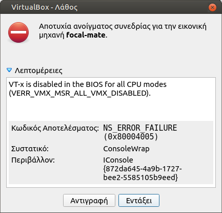

Εικονικές μηχανές (Virtual Machines)¶
Η Τ.Σ. του Π.Σ.Δ. έχει δημιουργήσει και συντηρεί έτοιμες εικονικές μηχανές:
τις οποίες μπορείτε να χρησιμοποιείτε με διάφορους τρόπους, όπως:
-
Αν έχετε μικτό εργαστήριο 32/64bit clients, ως εικονικό 32bit Λ.Σ. VirtualBox μέσα σε πραγματικό/φυσικό 64bit LTSP server, χωρίς έτσι να χρειάζεται η αγορά/ύπαρξη δεύτερου πραγματικού LTSP server.
-
Ως το κύριο Λ.Σ., μετατρέποντας τον εικονικό σκληρό δίσκο
.vmdk, σε πραγματικό partition του σκληρού σας δίσκου (Κλωνοποίηση). -
Ως εικονικό Λ.Σ. δοκιμών (Ubuntu MATE), μέσα στο πραγματικό Λ.Σ. που ήδη έχετε.
32bit clients σε LTSP server 64bit¶
Σενάριο¶
Έχετε ήδη εγκαταστημένο LTSP server 64bit και θέλετε να υποστηρίξετε και
32bit clients. Λόγω αρχιτεκτονικής τα 32bit clients δεν μπορούν να
εξυπηρετηθούν από τον 64bit εικονικό δίσκο, που ήδη χρησιμοποιείτε για τα
64bit clients του εργαστηρίου σας. Η λύση σε αυτό είναι η χρήση εικονικής
μηχανής 32bit VirtualBox.
Ουσιαστικά θα συντηρείτε δύο Ubuntu MATE. To 64bit του LTSP server σας και
το 32bit της εικονικής μηχανής. Για τα 64bit clients δεν αλλάζει κάτι, θα
συνεχίσουν να εξυπηρετούνται από τον εικονικό δίσκο του LTSP server. Τα 32bit
clients όμως θα εξυπηρετούνται από 32bit εικονικό δίσκο .img τον οποίο θα
δημιουργείτε απο τον τοπικό δίσκο της εικονικής μηχανής .vmdk.
Προϋποθέσεις¶
- Λειτουργικό εργαστήριο με LTSP server με 64bit clients.
- 32bit client(s) με τις προτεινόμενες προδιαγραφές.
Βήματα υλοποίησης¶
-
Ακολουθείτε χωρίς αλλαγές τον οδηγό Λ.Σ. δοκιμών (Ubuntu MATE), ώστε να έχετε στον 64bit LTSP server σας, μια Bionic MATE 32bit εικονική μηχανή.
Πληροφορία
-
Η εικονική μηχανή δε συμμετέχει στο τοπικό δίκτυο του εργαστηρίου γι' αυτό και δε χρειάζεται αλλαγές στις ρυθμίσεις δικτύου της. Έχει πρόσβαση στο διαδίκτυο, αλλά βρίσκεται σε άλλο υποδίκτυο (NAT).
-
Αν και στην εικονική μηχανή θα βρείτε προεγκατεστημένα το Επόπτης και τη Διαχείριση ΣΕΠΕΗΥ, τα αγνοείτε. Η διαχείριση του εργαστηρίου και των χρηστών γίνεται μόνο απο τον 64bit LTSP server.
-
Μετά το 1ο βήμα, μπορείτε να σβήσετε τη συμπιεσμένη εικονική μηχανή
.squashfs, ώστε να εξοικονομήσετε χώρο στο δίσκο του LTSP server.
-
-
Με κλειστή την εικονική μηχανή, από τερματικό:
# Κατάλληλη "σύνδεση" του x86_32.img, ώστε να δημιουργείται από το bionic-mate-flat.vmdk sudo ln -s $HOME/VirtualBox\ VMs/bionic-mate/bionic-mate-flat.vmdk /srv/ltsp/x86_32.img # Δημοσίευση εικονικού δίσκου x86_32.img sudo ltsp image x86_32 # Ενημέρωση των καταχωρήσεων στο μενού του ipxe. sudo ltsp ipxeΓια να επιβεβαιώσετε ότι πλέον έχετε δύο εικονικούς δίσκους (x86_32/x86_64):
$ sudo ls -lR /srv/ltsp /srv/ltsp: σύνολο 8 drwx------ 2 root root 4096 Απρ 2 12:28 images lrwxrwxrwx 1 root root 73 Απρ 2 12:23 x86_32.img -> '../../home/administrator/VirtualBox VMs/bionic-mate/bionic-mate-flat.vmdk' /srv/ltsp/images: σύνολο 4336212 -rw-r--r-- 1 root root 2395348992 Απρ 2 12:28 x86_32.img -rw-r--r-- 1 root root 2044923904 Μαρ 16 18:21 x86_64.img
Αν όλα έχουν πάει σωστά, ανάλογα ποιας αρχιτεκτονικής client θα εκκινείτε, θα επιλέγεται αυτόματα ο κατάλληλος εικονικός δίσκος.
Προσοχή
-
Την εικονική μηχανή να την ανοίγετε μόνο όταν θέλετε να εγκαταστήσετε καποιο λογισμικό ή να κάνετε ενημερώσεις. Έτσι δεν επιβαρύνεται και η CPU/RAM του LTSP server.
-
Να φροντίζετε ώστε η εικονική μηχανή να έχει εγκατεστημένα τα ίδια λογισμικά με τον LTSP server, έτσι ώστε οι χρήστες, ανεξάρτητα ποιας αρχιτεκτονικής clients (32/64bit) θα χρησιμοποιούν, να έχουν διαθέσιμα τα ίδια προγράμματα/μενού.
-
Μετά από κάθε εργασία εγκατάστασης/ενημέρωσης της εικονικής μηχανής, να την κλείνετε και να κάνετε δημοσίευση του 32bit εικονικού δίσκου της:
sudo ltsp image x86_32.
Κλωνοποίηση μέσω LTSP server¶
Σενάριο¶
Έχετε ήδη εγκαταστημένο LTSP server και θέλετε να εγκαταστήσετε Ubuntu MATE σε υπολογιστή μέσω του τοπικού δικτύου, έτσι ώστε στη συνέχεια, να τον χρησιμοποιήσετε ως standalone θέση εργασίας ή να τον μετατρέψετε σε LTSP server.
Προϋποθέσεις¶
- Λειτουργικός LTSP server.
- Τοπικό δίκτυο. Προτείνεται στα 1000 Mbps έτσι ώστε να γίνει πολύ γρήγορα η εγγραφή του εικονικού.
- Υπολογιστής "στόχος" με τις προτεινόμενες προδιαγραφές.
- Κατάλληλες ρυθμίσεις στο BIOS "στόχου", ώστε να είναι σε BIOS mode (ή
UEFI/legacy mode), γιατί και ο εικονικός
.vmdkείναι σε BIOS/MBR mode. -
Συμπιεσμένη εικονική μηχανή
.squashfsμέσα στο φάκελοVirtualBox VMs.Προσοχή
Μόνο την "κατεβάζετε", δεν αποσυμπιέζετε το
.squashfs, γιατί μπορεί να σας κάνει overwrite προϋπάρχουσα εικονική μηχανή. Η λήψη μπορεί να γίνει και όπως περιγράφετε στο 1ο βήμα της ενότητας Λ.Σ. δοκιμών (Ubuntu MATE).
Βήματα υλοποίησης¶
-
Εκκίνηση από το δίκτυο του υπολογιστή "στόχου".
-
Σύνδεση ως
administratorστον υπολογιστή "στόχο". -
Από τερματικό π.χ. ως
administrator@ltsp147:Προσοχή
Η εντολή
ddδιαγράφει όλα τα δεδομένα του δίσκου οριστικά!!!# Απενεργοποίηση τυχόν τοπικών swap files. sudo swapoff -a # Εύρεση του "ονόματος" του τοπικού δίσκου (π.χ. sda). lsblk --fs # Προσάρτηση του .squashfs π.χ. για το noble-mate: udisksctl loop-setup -f ~/"VirtualBox VMs"/noble-mate.squashfs # Εγγραφή του .vmdk, στον τοπικό δίσκο π.χ. για sda: sudo dd if=/media/$USER/disk/noble-mate-flat.vmdk of=/dev/sda bs=1M status=progress # Αποπροσάρτηση του .squashfs umount /media/$USER/disk -
Χωρίς να κάνετε επανεκκίνηση τον υπολογιστή "στόχο" συνεχίζεται στο τερματικό π.χ. για
/dev/sda:gparted /dev/sdaΣτο GParted πρέπει να γίνουν δύο βασικές ενέργειες:
-
Αύξηση του μεγέθους του swap partition /dev/sda2 σε 4100 MB και μετακίνηση του στο τέλος του δίσκου. Πριν το επόμενο βήμα να γίνει Εφαρμογή όλων των εργασιών (εικονίδιο
 ).
). -
Αύξηση του μεγέθους του linux partition /dev/sda1 ώστε να καταλαμβάνει όλο το διαθέσιμο δίσκο και Εφαρμογή όλων των εργασιών (εικονίδιο
).
-
Ο υπολογιστής "στόχος" είναι έτοιμος. Μπορείτε να κάνετε επανεκκίνηση ώστε να ελέγξετε ότι είναι λειτουργικός.
Κλωνοποίηση μέσω Live USB¶
Σενάριο¶
Θέλετε να εγκαταστήσετε Ubuntu MATE σε υπολογιστή μέσω τοπικού μέσου (π.χ. Live USB), έτσι ώστε στη συνέχεια, να τον χρησιμοποιήσετε ως standalone θέση εργασίας ή να τον μετατρέψετε σε LTSP server.
Προϋποθέσεις¶
- Live USB.
- Συμπιεσμένη εικονική μηχανή
.squashfs, στον αρχικό κατάλογο/του Live USB. - Υπολογιστής "στόχος" με τις προτεινόμενες προδιαγραφές.
- Κατάλληλες ρυθμίσεις στο BIOS "στόχου", ώστε να είναι σε BIOS mode (ή
UEFI/legacy mode), γιατί και ο εικονικός
.vmdkείναι σε BIOS/MBR mode.
Βήματα υλοποίησης¶
-
Εκκίνηση του υπολογιστή "στόχου" με τη χρήση του Live USB.
Για την εκκίνηση από Live USB ισχύει ότι και στην Εγκατάσταση του Ubuntu.
-
Από τερματικό:
Προσοχή
Η εντολή
ddδιαγράφει όλα τα δεδομένα του δίσκου οριστικά!!!sudo -i # Απενεργοποίηση τυχόν τοπικών swap files. swapoff -a # Εύρεση του "ονόματος" του τοπικού δίσκου (π.χ. sda). lsblk --fs # Προσάρτηση του .squashfs π.χ. για το noble-mate: udisksctl loop-setup -f /isodevice/noble-mate.squashfs # Αν το mapped έγινε στο /dev/loop6, τότε: udisksctl mount -b /dev/loop6 # Εγγραφή του .vmdk, στον τοπικό δίσκο π.χ. για sda: dd if=/media/$USER/disk/noble-mate-flat.vmdk of=/dev/sda bs=1M status=progress # Αποπροσάρτηση του .squashfs umount /media/$USER/disk exit -
Ίδιες ενέργειες με το βήμα 4 του οδηγού Κλωνοποίηση μέσω LTSP server.
Ο υπολογιστής "στόχος" είναι έτοιμος. Μπορείτε να κάνετε επανεκκίνηση ώστε να ελέγξετε ότι είναι λειτουργικός.
Λ.Σ. δοκιμών (Ubuntu MATE)¶
Για να κάνετε χρήση της έτοιμης εικονικής μηχανής π.χ. της Ubuntu Bionic MATE 18.04 32bit, θα πρέπει να ακολουθήσετε τα επόμενα βήματα:
-
Από τερματικό:
mkdir -p ~/"VirtualBox VMs" cd ~/"VirtualBox VMs" # Download της συμπιεσμένης εικονικής μηχανής. wget https://ts.sch.gr/repo/images/VMs/bionic-mate.squashfs # Αποσυμπίεση στο φάκελο VirtualBox VMs/bionic-mate. unsquashfs -f -d bionic-mate bionic-mate.squashfsΑν χρειαστείτε την
noble-mate, στις εντολές όπουbionic-mateαντικαταστήστε μεnoble-mate. -
Εγκατάσταση του VirtualBox. Μόλις ολοκληρωθεί η εγκατάσταση, θα το βρείτε στο Εφαρμογές ▸ Εργαλεία συστήματος ▸ VirtualBox.
-
Εισαγωγή της εικονικής μηχανής
bionic-mate.vboxστο VirtualBox από το μενού: Μηχανή ▸ Προσθήκη... ή μεCtrl+A.Το αρχείο
.vboxβρίσκεται μέσα στον αντίστοιχο φάκελο τουVirtualBox VMs. -
Πριν επιλέξετε Εκκίνηση θα πρέπει να ελέγξετε τις Ρυθμίσεις της εικονικής μηχανής. Το κυριότερο είναι το μέγεθος της μνήμης RAM να είναι στα προτεινόμενα όρια.
 Σε περίπτωση που κατά την Εκκίνηση εμφανιστεί το μήνυμα της διπλανής εικόνας, θα πρέπει από το BIOS/UEFI να ενεργοποιήσετε την επιλογή Intel Virtualization Technology (VT-x). Το αντίστοιχο μήνυμα για AMD CPU θα είναι:
AMD-V is disabled in the BIOS.
{kind=link}
Λ.Σ. δοκιμών (Windows)¶
Για να κάνετε χρήση της έτοιμης εικονικής μηχανής π.χ. της Ubuntu Bionic MATE 18.04 32bit σε περιβάλλον MS Windows, θα πρέπει να ακολουθήσετε τα επόμενα βήματα:
-
Από το
Powershell:# Δημιουργία καταλόγου για τις εικονικές μηχανές. mkdir ~\'VirtualBox VMs' -ea 0 cd ~\'VirtualBox VMs' # Download της συμπιεσμένης εικονικής μηχανής. Start-BitsTransfer https://ts.sch.gr/repo/images/VMs/bionic-mate.squashfs # Εγκατάσταση απαραίτητων λογισμικών. winget install --id=7zip.7zip --exact --silent --accept-package-agreements --accept-source-agreements ;` winget install --id=Oracle.VirtualBox --exact --silent --accept-package-agreements --accept-source-agreements # Αποσυμπίεση στο φάκελο VirtualBox VMs/bionic-mate. .'C:\Program Files\7-Zip\7z' x bionic-mate.squashfs -obionic-mateΝαι... η τελευταία εντολή ξεκινά με μια τελίτσα
.!Αν για κάποιο λόγο το
wingetδεν υπάρχει στο σύστημά σας, δοκιμάστε χειροκίνητη εγκατάσταση των απαραίτητων λογισμικών7zip,VirtualBox). -
Μόλις ολοκληρωθούν τα παραπάνω, εκτελέστε το VirtualBox από το μενού Έναρξη ▸ Oracle VirtualBox ▸ Oracle VirtualBox.
-
Εισαγωγή της εικονικής μηχανής
bionic-mate.vboxστο VirtualBox από το μενού: Μηχανή ▸ Προσθήκη... ή μεCtrl+A.Το αρχείο
.vboxβρίσκεται μέσα στον αντίστοιχο φάκελο τουVirtualBox VMs.Αν χρειαστείτε την
noble-mate, στις εντολές όπουbionic-mateαντικαταστήστε μεnoble-mate. -
Πριν επιλέξετε Εκκίνηση θα πρέπει να ελέγξετε τις Ρυθμίσεις της εικονικής μηχανής. Το κυριότερο είναι το μέγεθος της μνήμης RAM να είναι στα προτεινόμενα όρια.
 Σε περίπτωση που κατά την Εκκίνηση εμφανιστεί το μήνυμα της διπλανής
εικόνας, θα πρέπει από το BIOS/UEFI να ενεργοποιήσετε την επιλογή Intel
Virtualization Technology (VT-x). Το αντίστοιχο μήνυμα για AMD CPU θα
είναι:
Σε περίπτωση που κατά την Εκκίνηση εμφανιστεί το μήνυμα της διπλανής
εικόνας, θα πρέπει από το BIOS/UEFI να ενεργοποιήσετε την επιλογή Intel
Virtualization Technology (VT-x). Το αντίστοιχο μήνυμα για AMD CPU θα
είναι: AMD-V is disabled in the BIOS.
Πληροφορία
Ο οδηγός των διαφόρων μεθόδων κλωνοποίησης θα ενημερώνεται συνεχώς. Για περισσοτερες πληροφορίες/λύσεις/απορίες δείτε: